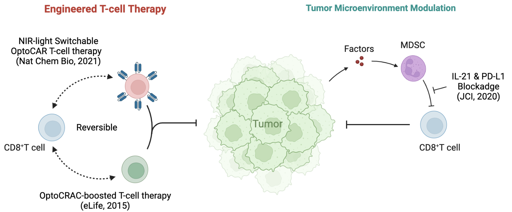

He, Lian (何涟)
 |
Assistant Professor Department of Pharmacology, School of Medicine, Southern University of Science and Technology, Shenzhen, China E-mail: hel3@sustech.edu.cn |
About
He lab at SUSTech is interested in integrating multi-omics and optogenetics to study tissue biology and develop cancer immunotherapies.
Education
Ph.D., Medical Sciences, Texas A&M University, 2018-05
Dissertation Title: Engineered CRAC channel for optical control of calcium signaling.
Awards: Chinese Government Award for Outstanding Self-financed Students Abroad, Robert and Anabel Bruce Travel Award, Pre-doctoral Research Fellowship (The Welch Foundation)
M.S., Molecular Biology and Molecular Evolution, Sun Yat-sen University, 2011-06
Dissertation Title: Efficient and specific inhibition of plant microRNA function by anti-microRNA oligonucleotides (AMOs) in vitro and in vivo.
B.S., Biotechnology, Sun Yat-sen University, 2008-06
Research Area
Optogenetic Immunomodulation (eLife 2015; Physiological Reviews 2022)
Tumor Microenvironment (Trends in Biotech 2017; PLoS Biology 2020; JCI 2020; Adv Sci 2022)
Protein Engineering and Biologics (Nat Chem Bio 2021; Nat Commun 2021; Adv Sci 2021; Nuc Acids Res 2022)
Research Interest
|  |
Tumor Niches and Cancer Metastasis: Immune checkpoint blockade using antibodies against CTLA-4 and PD1/PD-L1 generates durable T cell response. We have demonstrated that Beclin 1 in Ly6G+CD11b+ neutrophils is a non-cell-autonomous tumor suppressor in pre-B acute lymphoblastic lymphoma (ALL). Neutrophil-derived factors such as IL-21 and neutrophil extracellular traps (NETs) trigger the persistent activations of oncogenic signaling pathways and the expression of immunosuppressive ligand PD-L1 in pre-B cells. Importantly, low Beclin-1 expression in human neutrophils and high IL-21 correlates with PD-L1 expression in patients with recurrent pre-B ALL (JCI 2021).The blockade of IL-21 alone or with PD-L1 could serve as a new immunotherapy to recurrent pre–B ALL, since the emerging CAR-T cell immunotherapies are often hampered by the emergence of CD19- or CD20-negative cancer clones. We are actively developing tools to study the tumor microenvironment and identify factors that drive cell-cell interactions and cancer cell dormancy and metastasis, and to develop immunotherapies for tumor killing.
Nanobody-based Immunotherapy: Single-domain intrabodies and their mimetics such as monobodies or nanobodies rival conventional antibodies by their substantially smaller sizes (12–15 kDa vs 150–160 kDa), freedom from disulfide-bond formation, and ease of in vitro and in cellular expression. We have developed synthetic sunbodies and moonbodies, in the form of ON-switches (sunbody) or OFF-switches (moonbody) that respond to light within dozens of seconds (Advanced Biology 2021). We are further expanding these molecular tools to accelerate the development of personalized medicine including CAR T-cell therapy and customized therapeutic biologics that respond to light.
Optogenetic Regulation and Spatial Transcriptomics: Optogenetics combines light and genetics to enable precise control of living cells, tissues, and organisms with tailored functions. Optogenetics has the advantages of noninvasiveness, rapid responsiveness, tunable reversibility, and superior spatiotemporal resolution.We have developed variety of tools -optoCRAC, optoPB, LiMETER, Sunbody and Moonbody, cpLOV2 (LiCASINO and OptoCAR), pNUTs- to dissect and manipulate biological pathways and gene expression in a non-invasive and reversible manner. We are actively developing tools to identify real-time cell circuits and physiology in intact tissue through integrating optical input with transcriptional outputs by combing optogenetic regulation with spatial transcriptomics.
Featured Articles
Tan P*, Hong T, Cai X, Li W, Huang Y, He L*, Zhou Y*. Optical control of protein delivery and partitioning in the nucleolus. Nucleic Acids Research, 2022.
Tan P#, He L#, Huang Y, Zhou Y. Optophysiology: illuminating cell physiology with optogenetics. Physiological Reviews, 2022.
He L#, Huang Z#, Huang K#, Chen R, Nguyen N, Wang R, Cai X, Huang Z, Han G, Zhou Y and Jing J. Optogenetic control of non-apoptotic cell death. Advanced Science, 2021.
He L#, Tan P#, Zhu L#, Huang K#, Nguyen N, Wang R, Guo L, Li L, Yang Y, Huang Z, Huang Y, Han G, Wang J and Zhou Y. Circularly permuted LOV2 as a modular photoswitch for optogenetic engineering. Nature Chemical Biology, 2021.
He L*, Tan P, Huang Y*, Zhou Y*. Design of smart antibody mimetics with photosensitive switches. Advanced Biology, 2021.
He L#, Wang L#, Zeng H#, Tan P, Ma G, Zheng S, Li Y, Sun L, Dou F, Huang Y, Wang Y, and Zhou Y. Engineering of a bona fide light-operated calcium channel. Nature Communications, 2021.
Wang T#, He L#, Jing J, Lan TH, Hong T, Wang F, Huang Y, Ma G, and Zhou Y. Caffeine-operated synthetic modules for chemogenetic control of protein activities by life style. Advanced Science, 2021.
Tan P, He L, Xing C, Mao J, Yu X, Zhu M, Diao L, Han L, Zhou Y, You J, Wang Y, Wang R-F. Myeloid loss of Beclin 1 promotes PD-L1 hi precursor B cell lymphoma development. Journal of Clinical Investigation, 2020.
Tan P, Ye Y, He L, Xie J, Jing J, Ma G, Pan H, Han L, Han W, Zhou Y. TRIM59 promotes breast cancer motility by suppressing p62-selective autophagic degradation of PDCD10. PLoS Biology, 2018.
Tan P, He L, Huang Y, Zhou Y. Optogenetic immunomodulation: shedding light on antitumor immunity. Trends in Biotechnology, 2017.
He L#, Jing J#, Zhu L#, Tan P, Ma G, Zhang Q, Nguyen N, Wang J, Zhou Y, Huang Y. Optical control of membrane tethering and interorganellar communication at nanoscales. Chemical Science, 2017.
He L#, Zhang Y#, Ma G#, Tan P#, Li Z, Zang S, Wu X, Jing J, Fang S, Zhou L, Wang Y, Huang Y, Hogan PG, Han G, and Zhou Y. Near-infrared photoactivatable control of Ca2+ signaling and optogenetic immunomodulation. eLife, 2015.
Jing J#, He L#, Sun A, Quintana A, Ding Y, Ma G, Tan P, Liang X, Zheng X, Chen L, Shi X, Zhang SL, Zhong L, Huang Y, Dong MQ, Walker CL, Hogan PG, Wang Y, and Zhou Y. Proteomic mapping of ER–PM junctions identifies STIMATE as a regulator of Ca2+ influx. Nature Cell Biology, 2015.
Note# denotes co-first authors; * denotes corresponding authors.
Full list of publications in Google Scholar.
We are hiring researchers at different levels.